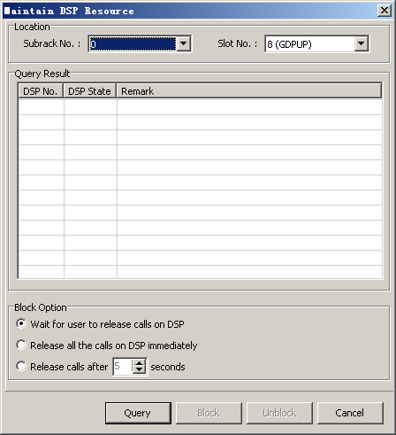

This describes how to maintain DSP resources. You can query the DSP status of the GDPUC, GDPUX, and GDPUP. You can also block and unblock DSPs.
Prerequisites
- The LMT runs normally.
- The communication between the LMT and the BSC is normal.
- The GDPUC, GDPUX, or GDPUP is functional.
Context
You can block and unblock a DSP according to actual needs. When blocking a DSP, you can select Wait for user to release calls on DSP, Release all the calls on DSP immediately, or Release calls after n seconds.
Procedure
- Through GUI
- On the LMT, choose . A dialog box is displayed, as shown in Figure 1.
Figure 1 Maintain DSP Resource dialog box
- Set parameters in the Location area, and then click Query to query the DSP status of the specified board.
- In the Query Result area, choose the DSP to be unblocked, and then click Unblock to unblock the DSP.
- In the Query Result area, choose the DSP to be blocked, and then click Block to block the DSP.
- Click Cancel.
- Through MML
- Run the BLK DSP command on the LMT to block the specified DSP.
- Run the UBL DSP command on the LMT to unblock the specified DSP.
Copyright © Huawei Technologies Co., Ltd.